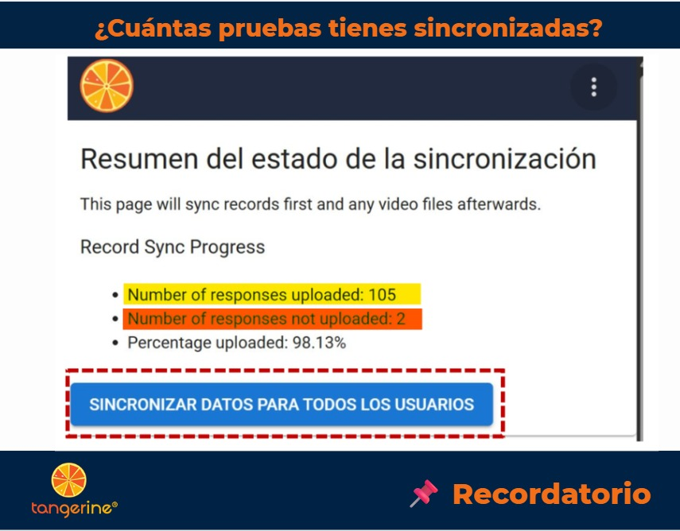
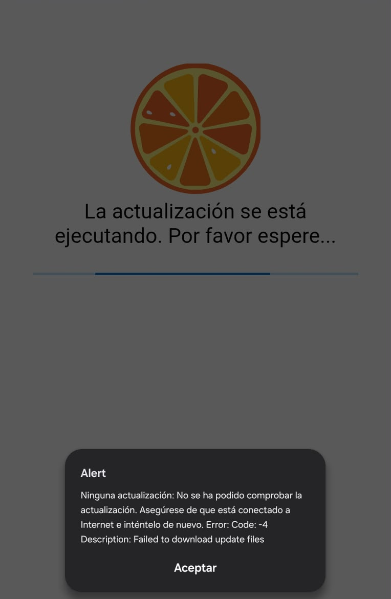
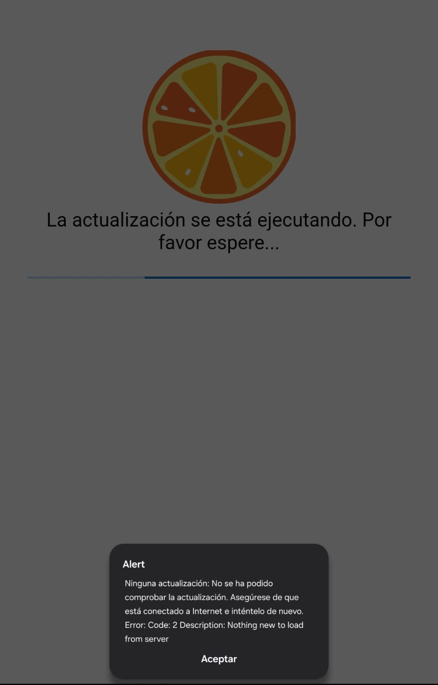
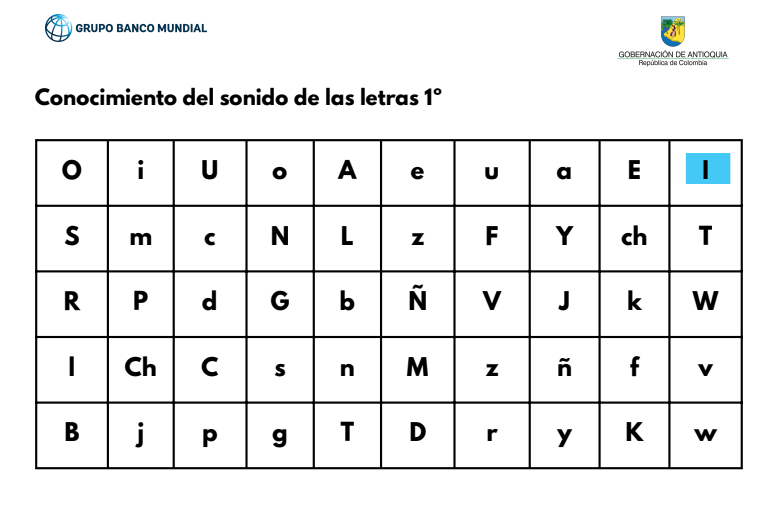

Alfabetización Inicial
Alfabetización Inicial Acompañamiento en aula
Realizas las visitas en transición y primero, con la progresión modelación, coanimación y observación.
Estrategia ALFA
Aquí encuentras los videos de capacitación, los materiales pedagógicos y todo lo que necesitas para tu trabajo en territorio.
Tu rol en ALFA
Eres el vínculo directo entre la estrategia y el aula: acompañas a los docentes para que implementen ATAL y Kalulu con fidelidad.
Realizas las visitas en transición y primero, con la progresión modelación, coanimación y observación.
Aplicas la prueba en dos momentos del año, línea base y final, con Tangerine.
Llevas los materiales ATAL y Kalulu a rectores y docentes en la primera visita a cada institución.
Registras los indicadores de fidelidad y los reportas al operador para el seguimiento de la estrategia.
Capacitación
Las capacitaciones realizadas en 2026, con los videos de cada sesión y las presentaciones para descargar. Elige la sesión y el día.
El primer día estableció el marco institucional completo de la estrategia: por qué existe ALFA, qué pretende lograr y cuál es el rol de cada actor. Se presentó la magnitud de la crisis de alfabetización en Antioquia, la teoría de cambio del programa y la ruta de implementación en cuatro fases. El mensaje central fue claro: el facilitador es el eslabón más crítico entre el programa y el aula, y su impacto se mide por lo que el docente puede hacer sin él.
Fundamentos de la Estrategia ALFA
El segundo día respondió la pregunta de fondo: ¿por qué enseñamos a leer de esta manera y no de otra? Se abordaron los fundamentos neurobiológicos del aprendizaje lector, el modelo simple de la lectura (reconocimiento de palabras + comprensión del lenguaje), y la importancia de la enseñanza explícita y sistemática. El mensaje central: la comprensión lectora es el producto de dos componentes, y si alguno está débil el otro no puede compensarlo.
Ciencia de la lectura y alfabetización inicial
El tercer día fue la transición de la teoría a la práctica: si el Día 1 explicó el qué y el quién, y el Día 2 el por qué, este día fue el cómo. Se presentaron los materiales ATAL, las rutas metodológicas para transición y primer grado, y se realizaron simulaciones prácticas de aula. La idea central: la fidelidad de la implementación es lo que garantiza los resultados. Mezclar actividades o alterar la progresión fonémica hace imposible saber qué está funcionando.
Programa ATAL: Aprendamos Todos a Leer
El cuarto día fue completamente práctico: instalación de Tangerine, protocolo de aplicación de las pruebas EGRA, interpretación de resultados y reporte de información. Se trabajó con simulaciones en tríos para preparar el trabajo de campo. Dos ideas fundamentales: sin datos no hay evidencia de que la estrategia funciona; y sincronizar todos los días, porque una tablet dañada antes de sincronizar significa perder el trabajo del día.
Tangerine: evaluación formativa y monitoreo
Esta sesión marcó el paso de la formación inicial al trabajo en territorio: formación técnica para acompañar, evaluar y diferenciar la enseñanza con fidelidad al programa ATAL. Se trabajaron las prácticas basadas en evidencia que complementan el programa, qué observar durante cada visita y cómo registrarlo en los formatos, cómo se ve una sesión de primer grado y cada modalidad de acompañamiento pedagógico.
Déjalas en el tablero de Padlet: las preguntas registradas allí se responderán en el próximo webinar.
De la sesión al territorio
Grabaciones de las mesas de trabajo de cada equipo operador durante la sesión del 2 de julio.
Mesas de trabajo por operador
Tangerine
Tangerine es la herramienta para aplicar la prueba EGRA y registrar los resultados. Elige lo que necesitas.
Antes de cerrar la jornada, entra a Sincronización en Tangerine y revisa el resumen del estado.

Pruebas que ya subieron a la nube. Están a salvo.
Pruebas que todavía están solo en la tablet: si la tablet se daña, se pierden. Al terminar el día este número debe quedar en 0.
Conéctate a WiFi, toca el botón azul Sincronizar datos para todos los usuarios y espera a que el porcentaje llegue a 100 %.
Al actualizar la aplicación puede aparecer una alerta con un código. Busca el código en el mensaje y sigue las indicaciones.
Error Code: -4Failed to download update files

Qué significa
La aplicación no pudo descargar la actualización.
Qué hacer
Error Code: 2Nothing new to load from server

Qué significa
No hay actualizaciones nuevas: la tablet ya tiene la última versión.
Qué hacer
Toca Aceptar y sigue trabajando normalmente.
¿Te aparece un código distinto? Comunícate con tu operador o escribe al WhatsApp de soporte 318 075 5943.
Tutoriales completos para diligenciar los formatos de observación de aula en Tangerine.
Observación de aula · Transición
Observación de aula · Primer grado
Preguntas frecuentes
Deja esa observación en los comentarios al finalizar la prueba. Si el estudiante sabe su edad, agrégala también en los comentarios.
Sí, siempre que preguntarle no interrumpa de forma importante la aplicación de la prueba.
Contacta a tu operador. Él se comunica con la Secretaría de Educación de Antioquia para resolver el problema. Si te aparece un mensaje de error al actualizar, revisa primero los errores más comunes.
Si el estudiante se retira en mitad de la prueba o se presenta algún inconveniente, explica en los comentarios qué pasó.
Lo ideal es sincronizar todos los días al terminar la jornada de aplicación, con una conexión a internet estable. Aquí puedes ver cómo revisar que todo quedó sincronizado.
Comunícate con tu operador.
En la Estrategia ALFA la prueba EGRA se aplica solo a estudiantes de primer grado.
Está diseñada para aplicarse al inicio y al final del año escolar. Puede haber una tercera aplicación a mitad de año como prueba formativa; si es así, se avisa con anticipación.
Sí, es la misma prueba en todas las aplicaciones del año escolar.
No. En cada aplicación los estudiantes se eligen al azar, siguiendo el protocolo de aleatorización.
35 estudiantes por sede. Si la sede tiene menos de 35, se evalúan todos.
Al azar, con el protocolo de aleatorización:
Se evalúa solo a los estudiantes que están presentes.
Si la sede tiene menos de 35 estudiantes, evalúa a todos.
No le apliques la prueba.
No. Para aplicar la prueba EGRA en el marco de la Estrategia ALFA no se necesita consentimiento de las familias.
Comunícate con tu operador. Él escala la situación con la Secretaría de Educación de Antioquia.
Lo ideal es usar un espacio tranquilo y silencioso dentro de la misma institución, por ejemplo la biblioteca.
Comunícate con tu operador para buscar una solución.
La subprueba de Comprensión lectora solo se aplica a los estudiantes que leen más de 24 palabras por minuto (PPM) en Fluidez. Tangerine hace ese filtro automáticamente.
La respuesta debe tener todos los elementos necesarios, pero no tiene que ser textual. En Tangerine esos elementos aparecen en gris debajo de cada pregunta como guía.
No se puede detener a mano. La subprueba de fluidez lectora oral tiene un autostop que la para sola cuando el niño lee mal las primeras 10 palabras. Para llegar ahí sin alargar la incomodidad del niño, puedes agrupar las preguntas («¿Conoces esta? ¿Y esta? ¿Alguna de estas?») e ir marcando rápido las incorrectas.
Es una I mayúscula, vocal, sonido /i/. Las primeras 10 posiciones de la subprueba son todas vocales (O, i, U, o, A, e, u, a, E, I). La confusión viene de la tipografía en pantalla; en la hoja física se distingue bien.

No encontramos preguntas con .
Escríbenos al WhatsApp de soporte 318 075 5943 y te ayudamos.